Presentations
Conference Talks
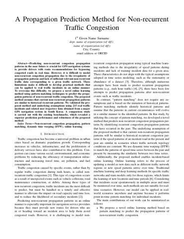
A Propagation Prediction Method for Non-recurrent Traffic Congestion, INFORMS Annual Meeting, Oct. 2021 (oral).[video][preprint]
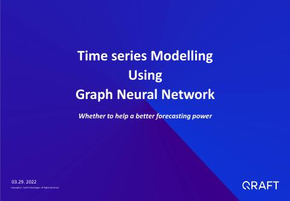
Congestion Propagation Modelling with Graph Neural Networks, KIIE Fall Conference, Nov. 2020 (oral).[slides]
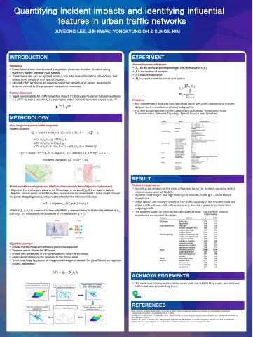
Quantifying Incident Impacts and Identifying Influential Features in Urban Traffic Networks, poster.[poster]
Project Decks
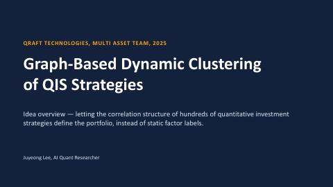
Graph-Based Dynamic Clustering of QIS Strategies, idea overview, Qraft Technologies, 2025.[slides]
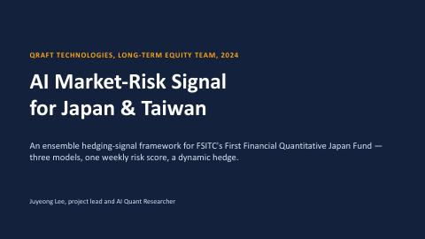
AI Market-Risk Signal for Japan and Taiwan (FSITC), Qraft Technologies, 2024.[slides]
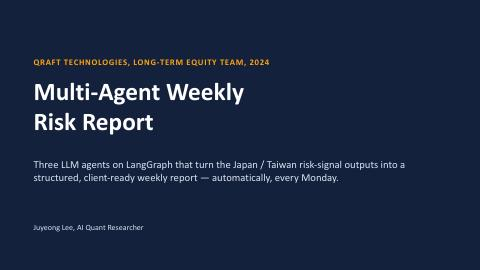
Multi-Agent Weekly Risk Report, LLM agents on top of the risk signal, Qraft Technologies, 2024.[slides]
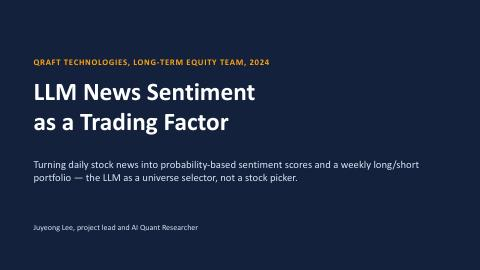
LLM News Sentiment as a Trading Factor, Qraft Technologies, 2024.[slides]
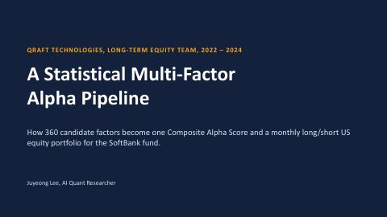
A Statistical Multi-Factor Alpha Pipeline (SoftBank), Qraft Technologies, 2023.[slides]
AI Hedge Fund Agents, personal project, 2025.[slides]
GNN and Time-Series Modelling for Traffic Congestion (NAVER Maps), UNIST, 2021.[slides]
Paper Summaries (ICAIF 2026, under review)
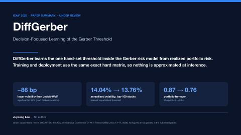
DiffGerber: Decision-Focused Learning of the Gerber Threshold.[summary]
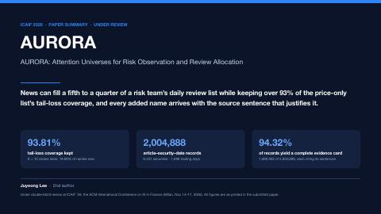
AURORA: Attention Universes for Risk Observation and Review Allocation.[summary]
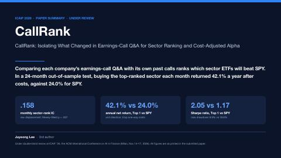
CallRank: Isolating What Changed in Earnings-Call Q&A for Sector Ranking and Cost-Adjusted Alpha.[summary]
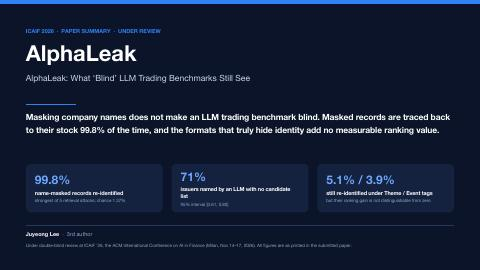
AlphaLeak: What "Blind" LLM Trading Benchmarks Still See.[summary]
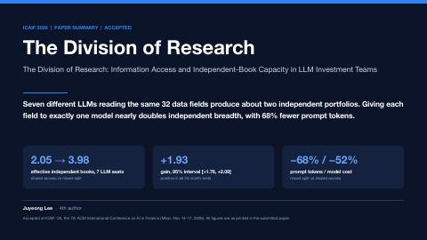
The Division of Research: Information Access and Independent-Book Capacity in LLM Investment Teams.[summary]
Thesis
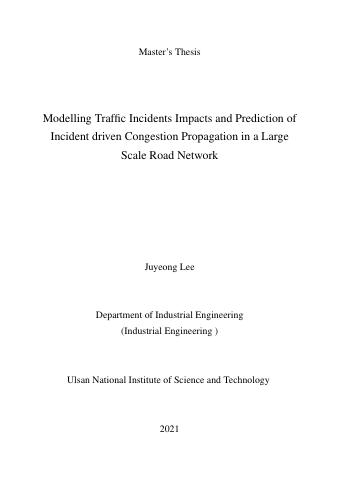
Modelling Traffic Incident Impacts and Prediction of Incident-driven Congestion Propagation in a Large-Scale Road Network, M.Sc. thesis, UNIST, 2021.[pdf]